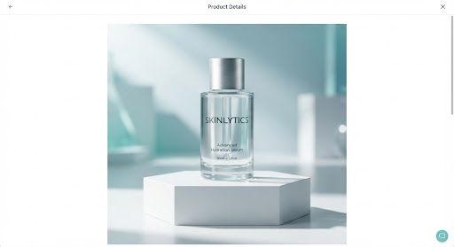

BIODERMA CLINICAL
Hydrabio Hyalu+ Serum
Why this matches you
expand_circle_downBased on your Dry/Sensitive profile, the high-molecular Hyaluronic Acid provides immediate surface hydration without clogging pores. The Carnosine content aligns with your Anti-Aging goal.
science Biochemical Composition
Clinical Analysis Ready| Ingredient Name | Function | Suitability | Allergy Flag |
|---|---|---|---|
| Hyaluronic Acid (High MW) | Humectant / Film-forming | check_circle | — |
| Carnosine | Antioxidant / Anti-glycation | check_circle | — |
| Niacinamide (Vitamin B3) | Barrier Repair | priority_high | Potential Irritant |
| Citric Acid | pH Adjuster | remove | — |
verified_user Routine Check
Vitamin C Compatibility
Safe with current Vitamin C serum. Hyaluronic acid enhances the stability of L-ascorbic acid.
Retinol Warning
Niacinamide in this product may increase sensitivity if used simultaneously with your Night Retinol.
Application Guide
Cleansing
Apply to damp skin after clinical cleansing to lock in maximum molecular moisture.
Dispensing
Use 3-4 drops for face and neck. Avoid direct contact of pipette with skin surfaces.
Layering
Wait 60 seconds for absorption before applying your barrier repair moisturizer.
Clinical Feedback
"Excellent for post-procedure recovery. The molecular weight distribution ensures deep penetration without occlusion."